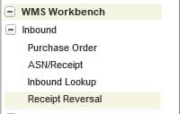
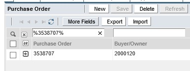
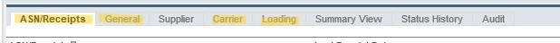

📦 Manual ASN Creation in WM9
Follow these steps to manually create an Advanced Shipping Notice within the
WM9 system.
🚨 Efficiency Alert: If your shipment contains a high volume of items and lines, do
NOT process it manually. Use the
RPA Automation instead to save time and ensure data
accuracy.
1. Initial PO Setup
-
Warehouse Selection
Select the Warehouse (WH) facility from the Facility drop-down menu relative to the
specific shipment you are working on.
-
Locate Purchase Order (PO)
On the left-hand sidebar, click the + sign next to the Inbound
section and select PO.

-
PO Search
Paste the PO number between two percent signs (e.g., %12345%) and hit Enter.
This
will generate the required Owner Code.

2. Creating the New ASN
-
Initialize Record
Click ASN/Receipt on the left-hand sidebar, then click the
New button on the top bar.
-
Header Information
Paste the Owner Code generated in Step 1 into the correct section. Set the
Document Receipt Date to today's date.
-
General Tab
Fill in the Invoice Number, Invoice Date, and
Number of
Cartons (UDF4) or Pallets (UDF5).
-
Carrier Tab
Enter your specific LOG ID in the Remarks section.
-
Loading Tab
Enter the following mandatory details:
- Traffic File Number: Paste the LOG ID.
- Terms of Delivery: Add the INCO Terms.
- Transportation Mode: Select applicable mode (Either Land, Air or
Sea).
- Country Details: Add Country of Origin and Destination.
-
Save Header
Click Save from the top bar. Keep the PO number copied for the next step.

the highlighted fields are required to be edited
3. Populating from PO
-
Action Menu
Click on Action from the top bar and select Populate from PO.
-
Selection
Add
%(PO)% in the PO section, hit enter,
then tick the checkbox on the left-hand side of the PO and click OK.
4. Validation & Discrepancies
Quantity Mismatch: If the PO quantity does not match the invoice:
- Export the data to Excel.
- Perform a VLOOKUP between Invoice SKUs and PO SKUs.
- If PO QTY > Invoice: Adjust the quantity down to match.
- If PO QTY < Invoice: Stop processing and send an email to the respective
BU for clarification.
Value Mismatch (Pricing):
- Saudi Arabia: You are authorized to manipulate prices to match the
Invoice value exactly.
- All Other Countries: You are NOT authorized to change prices.
Send an email to the BU regarding the discrepancy before proceeding.
5. Post-Creation Requirements
📍 Jafza & DIP Warehouse Note: After creating the ASN, if the warehouse is
Jafza or
DIP, you
MUST create an appointment
immediately. These warehouses cannot receive any shipment without a pre-scheduled appointment linked to
the ASN.
Go to Appointment Creation Guide
→
Redirect to WM9 Log in